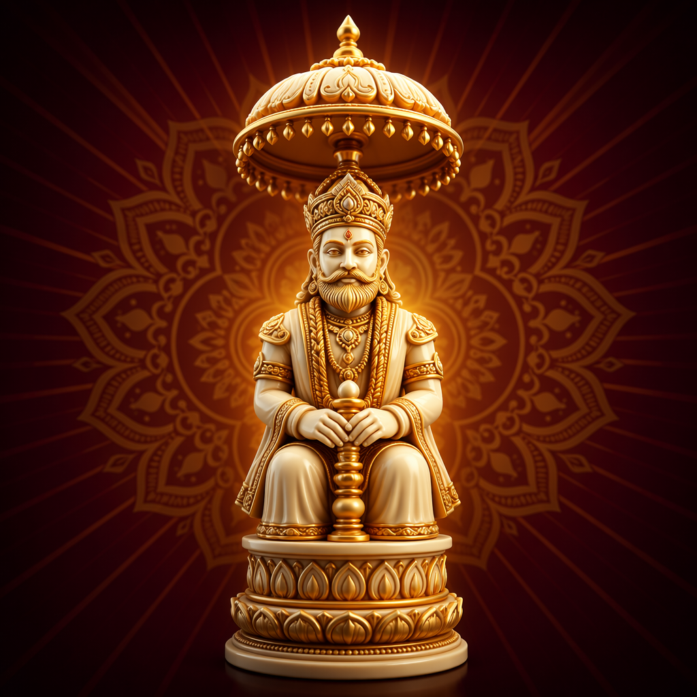
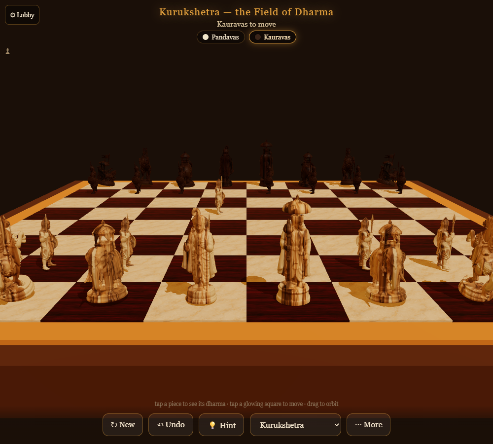
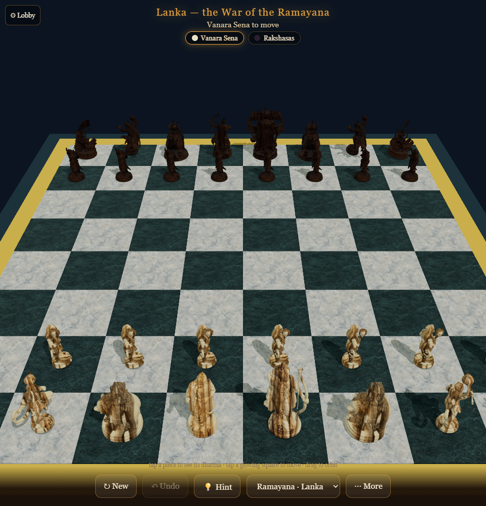
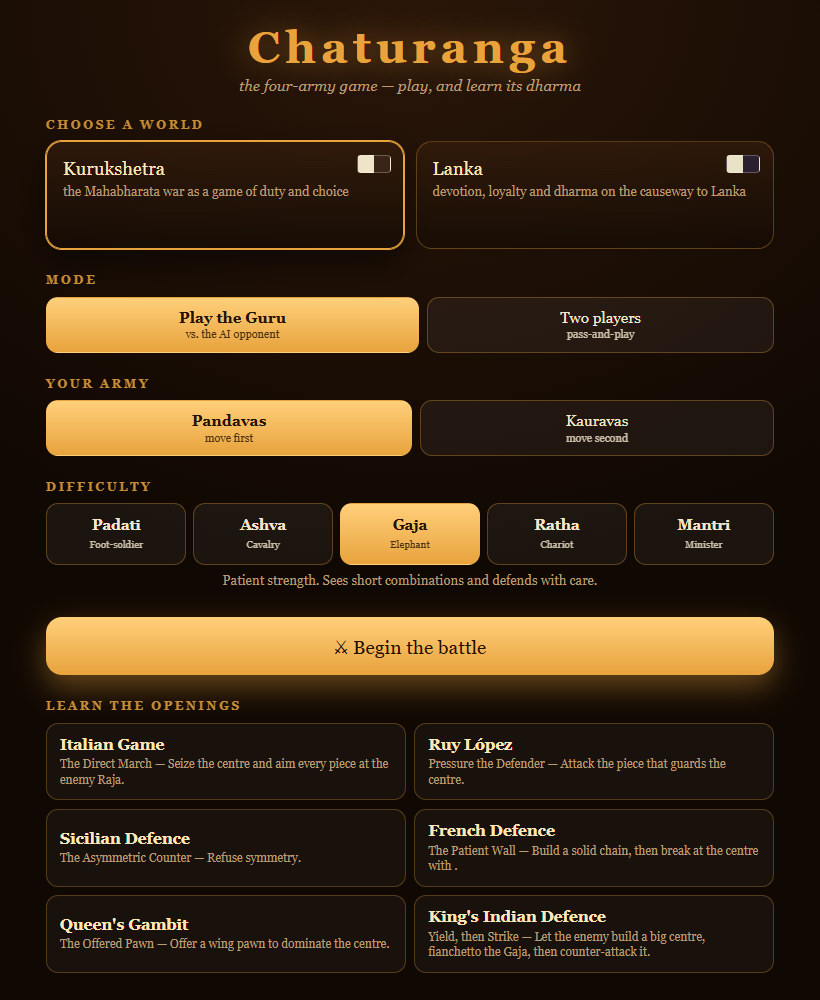
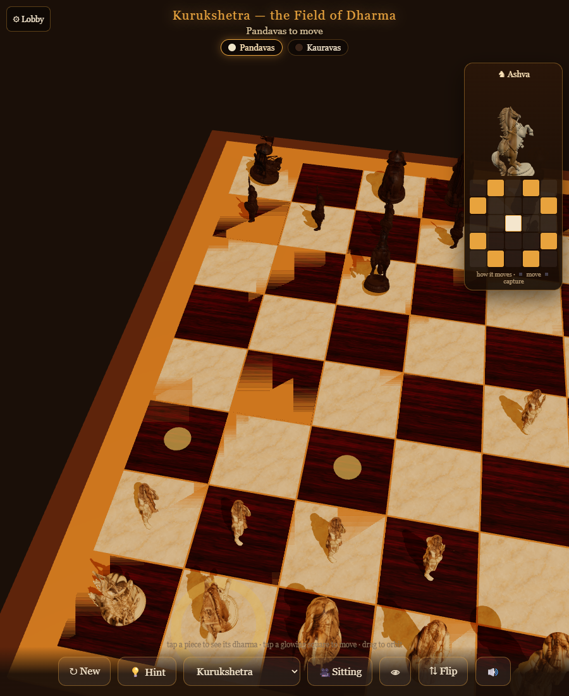
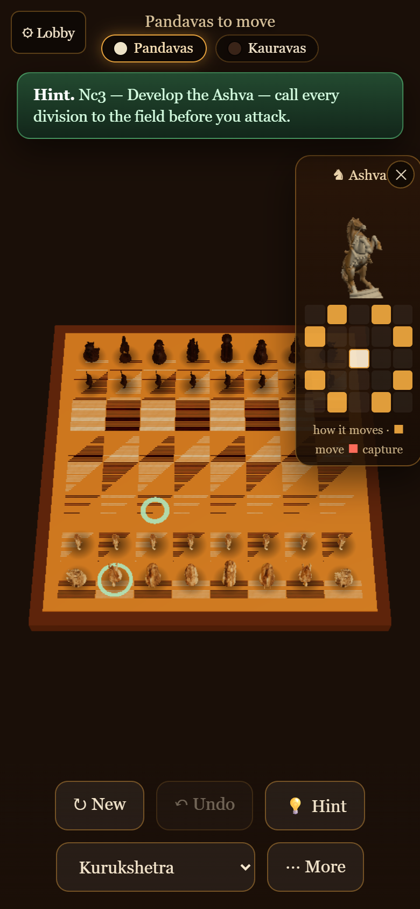

the ancient game of the four army divisions — play, and learn its dharma
Real-3D board · works offline · no sign-in · a teaching AI that explains its dharma.
Raja, Mantri, Ratha, Gaja, Ashva and Padati — the four-army host — move exactly like modern chess. Every piece carries a moral teaching.
Play the Guru from Padati to Mantri. An alpha-beta engine hints the best move and reviews your blunders — beatable at first, masterful at the top.
Walk six classic openings move-by-move — Italian, Ruy López, Sicilian, French, Queen's Gambit, King's Indian — each narrated as a lesson in strategy.
Tap a piece to see a rotating 3D render of it and a diagram of exactly how it moves and captures.
Drop the camera to a piece's eye level and look across the battlefield from its perspective.
Two hand-crafted worlds, each with its own army, board, teachings and a cinematic intro — with more to come.
An Indian-classical soundscape — a tanpura drone and raga melody with crafted move/capture/check sounds — and every teaching read aloud in an expressive Indian-English DragonHD voice.




